我是谁？我在哪？ - 中国酷儿 | 张钧尧 Junyao Zhang 「艺术访谈」
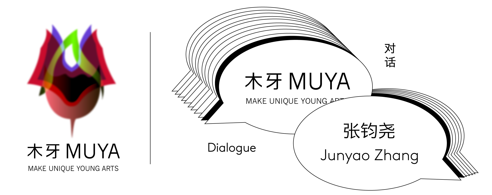欢迎来到木牙Make Unique Young Arts，让我们来寻找自我，走进后结构主义和后现代理论了解酷儿艺术吧！
“酷儿”（Queer）由英文音译而来，酷儿理论认为性别认同和性倾向不是“天然”的，而是通过社会和文化过程形成的。酷儿理论使用解构主义、后结构主义、话语分析和性别研究等手段来分析和解构性别认同、权力形式和常规。米歇尔·福柯、朱迪斯·巴特勒、伊芙·科索夫斯基·赛菊寇和迈克尔·华纳等是酷儿理论的重要理论家和先驱。把酷儿理论应用到各种学科的研究被称为酷儿研究。
新一代的酷儿理论不仅解构性，而且还分析文化的各个方面，但是在这个过程中总是联系到性别和性别角色，尤其是批评其中的压迫成分。-- Baidu百科
人对自我的认知从我们有意识以来便开始了，随着生活的不断固化，我们的思想也在一定程度上的被禁锢于看似日常以及相对合理之间。在一次次与自我碰撞的过程中我们开始了新的旅程。在这个学习成本价格较低的时代，知识变得触手可及。在花样繁杂种类繁多的文化大礼包冲击下，有这么一群人在挣扎中结构自我，剖析自我，接受自我。
处于后现代主义思潮的我们需要直面恐惧，战胜害怕，与自我和解从而活出自我。今天我们邀请了张钧尧来到木牙MUYA和我们一起来讨论和理解后俱乐部美学对中国酷儿社区的影响。
"Queer" is a transliteration of the English word for Queer theorizing that gender identity and sexual orientation are not "natural," but formed through social and cultural processes. Queer theory uses methods such as deconstruction, post-structuralism, discourse analysis and gender studies to analyze and deconstruct gender identity, forms of power and norms. Michel Foucault, Judith Butler, Eve Kosovsky Saijuko and Michael Warner are important theorists and pioneers of queer theory. The study of applying queer theory to a variety of disciplines is called queer studies.
The new generation of queer theory not only deconstructs sexuality but also analyzes various aspects of culture, but in the process is always linked to gender and gender roles, especially criticizing their oppressive elements. - Baidu
Self-cognition starts from our consciousness. With the continuous solidification of life, our thoughts are also imprisoned between seemingly daily and relatively reasonable to a certain extent. We start a new journey in the process of colliding with ourselves again and again. In an era when learning is cheap, knowledge is at your fingertips. Under the onslaught of various cultural gifts, there are a group of people struggling to structure, analyze, and accept themselves.
In the post-modernism trend of thought, we need to face the fear, overcome the fear, and reconcile with ourselves so as to live out the self. We invited Junyao Zhang to join us at MUYA to discuss and understand the impact of post-club aesthetics on the queer community in China.
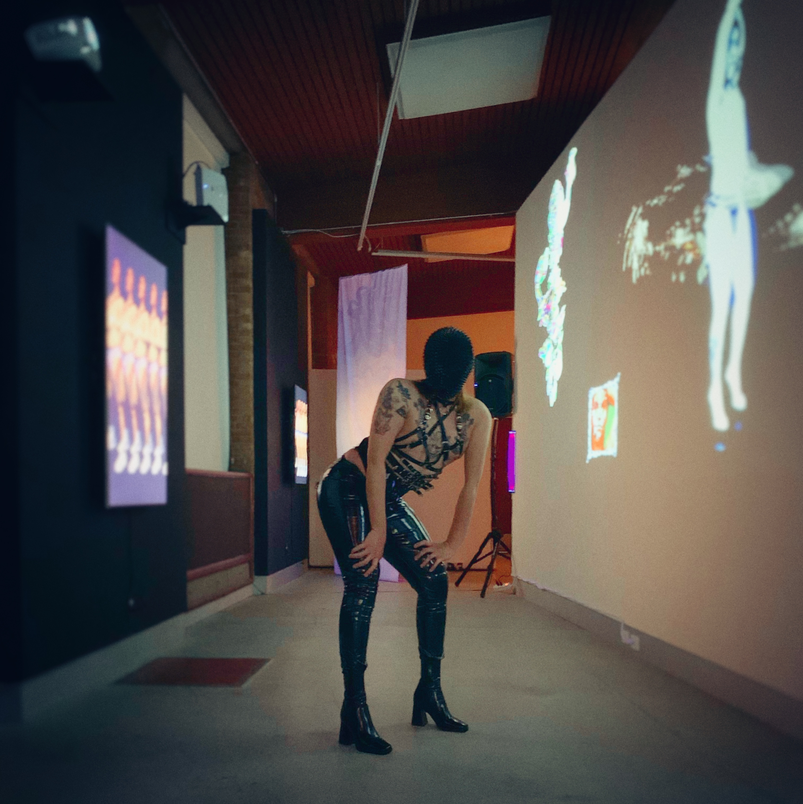
张钧尧（1995年生于广西玉林；现居美国明尼阿波利斯）是一名在表演，3D动画，实验影像，与电子音乐建立联系的跨学科艺术家。他的作品集中展现了中国酷儿身份在俱乐部中的双重可见性，以及为中国酷儿群体的物理和虚拟空间的拟态创造。
从明尼阿波利斯艺术设计学院毕业并获得的艺术创作硕士学位，以及上海海洋大学的商学士与管理学士双重学位的张钧尧，他的作品曾在多地展出，包括芝加哥的Mana Contemporary，明尼阿波利斯的Soo视觉艺术中心，明尼苏达州圣保罗的Light Spa，秘鲁利马的Escape 010101，北英格兰的WetDoveTail，以及纽约的Club Carry和墨西哥的Ego Club的虚拟DJ表演。2021年，张钧尧在明尼阿波利斯的沃克艺术中心被选入表演项目“静止的悖论”，Simone Forti和其助手Emily Mast合作重塑了她的作品《布料》（1967）。张钧尧关于后俱乐部美学对中国酷儿社区影响的期刊论文在2021年将以数字方式收录于OCAT的“ AMPLIFIER”电子期刊中。
Alejandro Junyao Zhang (born in 1995 in Yulin Guangxi China, currently in Minneapolis, MN) is an interdisciplinary artist who builds relationships between performance, 3D animation, experimental video, and electronic music. His works present the duality of visibility of the Chinese queer identity in the clubs and the simulation of physical and virtual spaces for the Chinese queer community.
With an MFA from Minneapolis College of Art and Design, and double degrees of BBS and BMS from Shanghai Ocean University, Zhang’s works have exhibited internationally, including Mana Contemporary in Chicago, Soo Visual Art Center in Minneapolis, Light Spa in St.Paul, Escape 010101 in Lima, WetDoveTail based in North England, and virtual DJ performances for Club Carry in New York, Ego Club in México. In 2021, Zhang is selected for the performance project, “The Paradox of Stillness” at Walker Art Center in Minneapolis, working with Simone Forti and her assistant Emily Mast to reperform her piece “Cloths” (1967). Zhang’s writing about the influence of Post Club aesthetics on Chinese queer community will be included in the “AMPLIFIER” journal, digitally published in 2021 by OCT Contemporary Art Terminal based in Shanghai.


我没有什么可以吸引你，但是我的艺术可以。
I have nothing to attract you, but my art can.
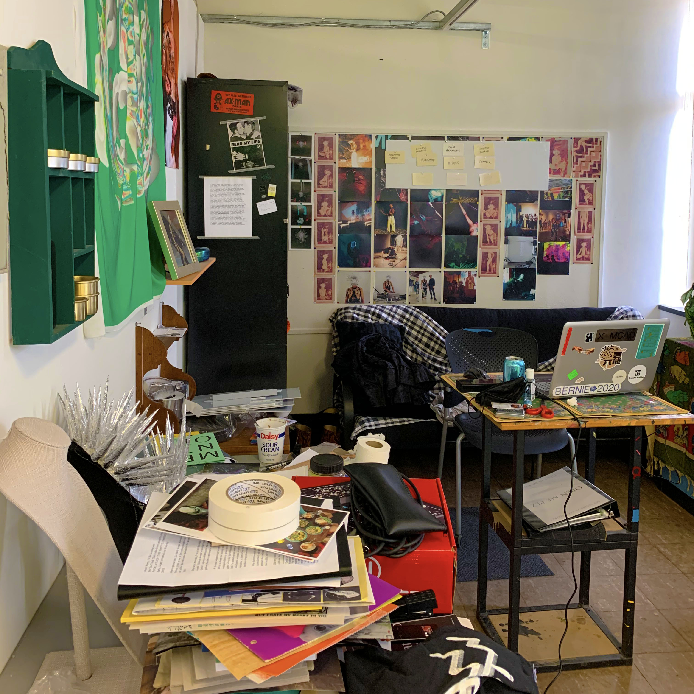

➤ 木牙MUYA: 酷⼉⽂化随着身份的不同所在的国家不同有着发展，钧尧⾃身对于酷⼉艺术⽂化发展最⼤的感触 是什么？是否有在作品中提及⼜是如何作⽤到作品当中的呢？
Queer develops in different countries with different identities. What is Junyao biggest feeling about the development of Queer art? Is there any mention related in the work and how does it affect the work?
Junyao: 我觉得我的感触好的一面是酷儿的公众可见性愈来愈强，也越来越多的人投入到酷儿艺术的创作与思考中。当然也有不好的感慨，那就资本化与商品化的社会结构让酷儿在当代主流社会中变成了博出位的消费品。而失去了初心，我在作品中基本上没有提到这些感慨。因为当下我的酷儿视觉表达主要传递在俱乐部的酷儿身份的可见性，并展现酷儿群体如何在后俱乐部美学（post-club aesthetics）时代生存，发展，最主要的是先学会自爱，自我接受，因为大环境的影响在公众接受度不高以及酷儿教育与公共资源不足的情况下，我们得先学会了解自己。
I think one of the positive things I feel is that queer people are becoming more and more visible to the public, and more and more people are engaging in queer art creation and thinking. Of course, there is also a bad feeling that the capitalized and commercialized social structure has made queerness a prominent consumer product in contemporary mainstream society. And lost the original mind, I basically did not mention these feelings in the work. Because now my queer visual expression mainly conveys the visibility of queer identity in the club, and shows how queer people survive and develop in the era of post-club aesthetics. The most important thing is to learn self-love and self-acceptance. In the context of low public acceptance and lack of queer education and public resources, we have to learn to understand ourselves first.
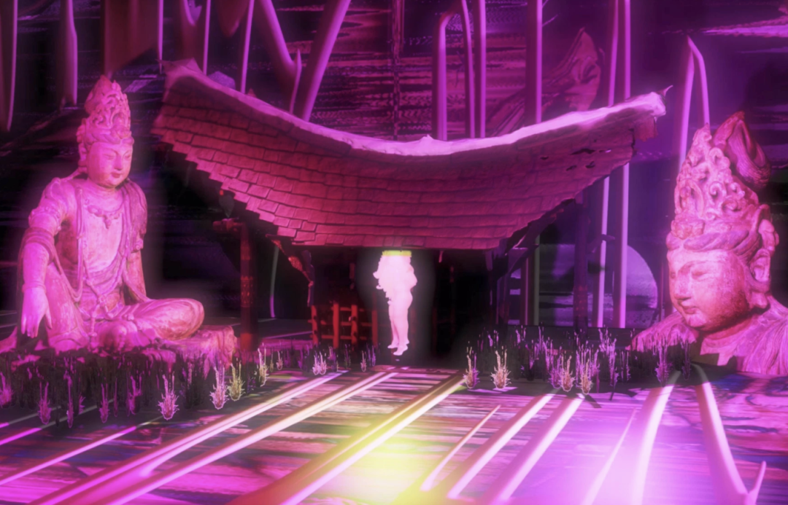
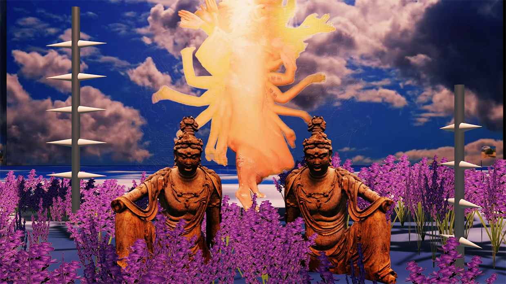
➤ 木牙MUYA: 酷⼉理论倡导⼀种⾃由的情感，⼈们慢慢的开始有了⾃主追求本我的意识，在钧尧看来如何理解“⾃我”和“⾃由”两个词汇之间的关联和不同呢？
Queer theory advocates a kind of freedom, and people gradually begin to have the consciousness of independent pursuit of the id. In Jun Yao's view, how to understand the connection and difference between the two words "self" and "freedom"?
Junyao: 酷儿的诞生正是因为外部传统的二元性社会架构以及主导意识限制了自我的发展。我觉得从这里已经可以看得出来他们之间的关联和不同了，自由限制自我，自由影响自我，自我倡导自由， 自我变革自由。
Queer is born because the external traditional dualistic social structure and dominant consciousness limit the development of the self. I think you can see the connection and the difference between them, freedom to restrict the egoism, freedom to affect the egoism, egoism to advocate freedom, egoism to change freedom.
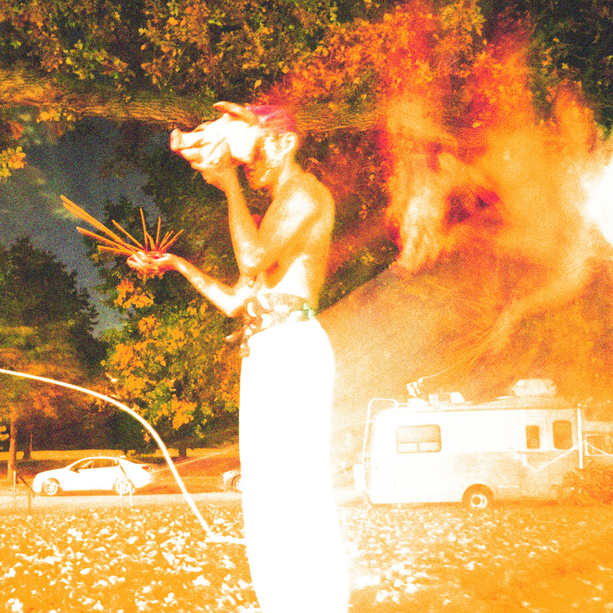
➤ 木牙MUYA: 随着后现代主义思潮的开始，各种反对约定俗成，固有形态，边界的艺术形式层出不穷。开始应⽤在建筑较多⽽酷⼉（Queer）是最近备受关注的主题，钧尧将这⼀主题⽤视觉传达的⽅式来展现的优势以及劣势分别有哪些？
With the beginning of the postmodernist trend, various art forms against conventions, inherent forms, and boundaries emerge endlessly. It applied to buildings more frequently in the beginning. Queer is a topic that has attracted much attention recently. What are the advantages and disadvantages of Junyao using this theme to convey visually?
Junyao: 其实也没有什么所谓的优劣势，只能从最当下的条件去判断，什么是当下最合适的材料与媒介。什么是最有效的沟通方式，这也是为什么我的媒介在变化的原因，从表演到交互，从音乐到动画，我也一直在探索。如果可以通过简单的手机发短信去展现，我也会做的。
In fact, there is no such thing as advantages and disadvantages. We can only judge what is the most appropriate material and media in the current situation. What is the most effective way to communicate, and that's why my medium is changing, from performance to interaction, from music to animation, I'm always exploring. If it could be done simply by texting on my phone, I would do it.
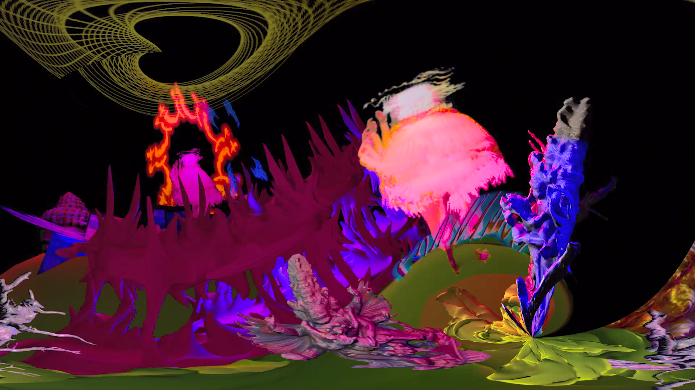
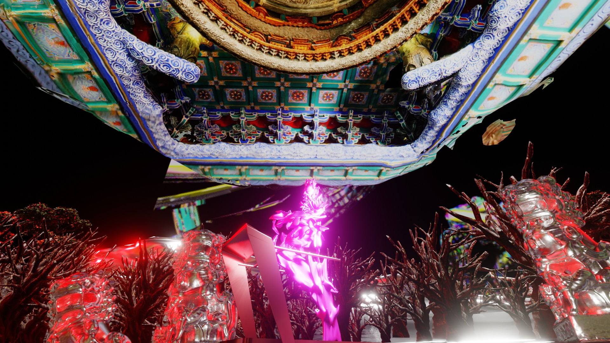
➤ 木牙MUYA: 酷⼉理论中将情感和⼈性从身份中解放出来，从⽽身份或性别变得多样化，从视觉⻆度出发，钧尧是如何梳理视觉语⾔的表达？
Queer theory liberates emotion and humanity from identity, thus identity or gender becomes diversified. From a visual perspective, how does Junyao sort out the expression of visual language?
Junyao:视觉角度当然涉及到很多需要思考的象征主义，同理心，空间性，时间性等等。但是本身作为酷儿，我是基于自己的亲身体验，身体观感，以及是否能让自己感受震撼来去梳理我的视觉语言，简单点，还是直觉哈哈。
The visual perspective of course involves a lot of thinking about symbolism, empathy, spatiality, temporality, and so on. But as a queer person, do I sort out my visual language based on my own experience, my body, and whether I can make myself feel shocked? Simply, or intuitively.
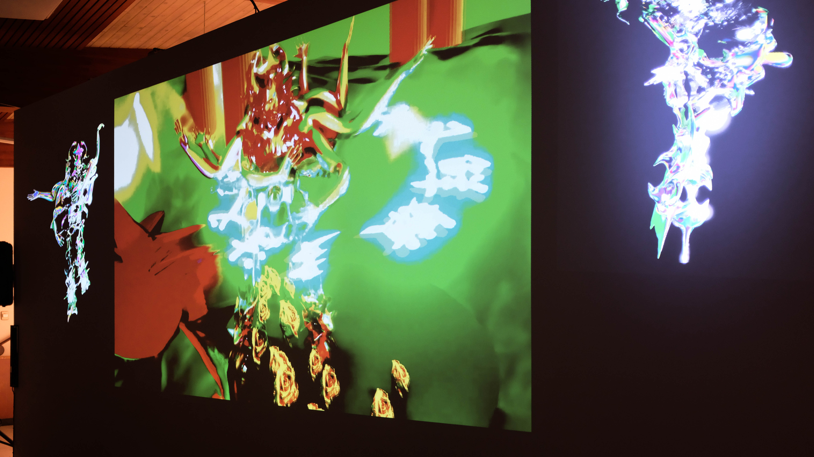
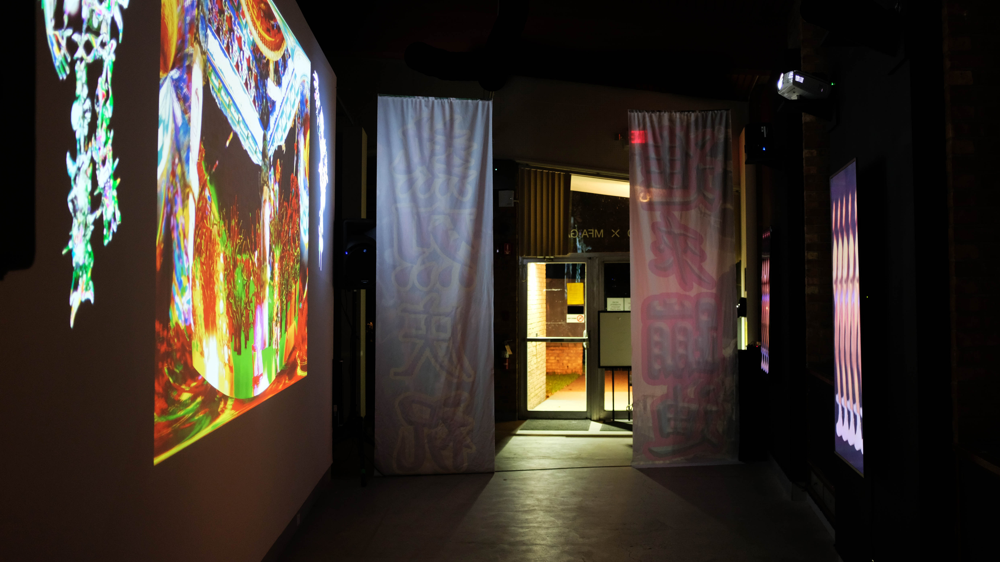
➤ 木牙MUYA: 酷⼉的时间性在酷⼉理论中也是⼀个很有趣的话题，伴随着很多当下年轻⼀代的精神焦虑，对于时间模版和⼈⽣节点的众多热点话题，例如电视剧《三⼗⽽已》也有在探讨将⼥性从时间规格中解放出来的话题，同样作为年轻⼀代，钧尧对于这些⼈⽣的时间规范的模式化理论⼜是怎样理解的呢？
Queer Timeliness in the queer theory is a very interesting topic, with a lot of the younger generation of mental anxiety, for the time node template and life of many hot topics, such as TV series “Just Thirty”on liberating women from the specific timeline of life, the same as the younger generation, How does Junyao understand these normative theories of time in life?
Junyao:正因为这些时间规范化的产生才诞生了与之抗衡的酷儿理论，其实酷儿是一种选择，酷儿不一定只是指代非异性恋群体，或者同性之爱，或者性别上的思考。酷儿广义上更代表了一种对于固有社会架构的一种解构的思想。所以其实《三十而已》里面所讨论的从时间规格的解放实质上是可以归类为酷儿行为，所以作为年轻一代，不管任何人都可以选择成为酷儿，都可以执行酷儿行为，所以这种模式化理论对于我来说是禁锢的，如果你活得不开心，何尝不去解构它呢？
And it's because of these temporal norms that a counterventing theory of queerness has emerged, that queerness is a choice, that queerness doesn't necessarily mean the non-heterosexual community, or homosexual relationship, or gender thinking. Queer in a broad sense represents a kind of deconstruction of the inherent social structure. So actually discussed the thirty just inside from the time of liberation is essentially can be classified as a queer behavior, so as the younger generation, whether anyone can choose to be queer, can perform queer behavior, so the estimation theory is locked for me, if you don't live happy, did not go to deconstruct it?
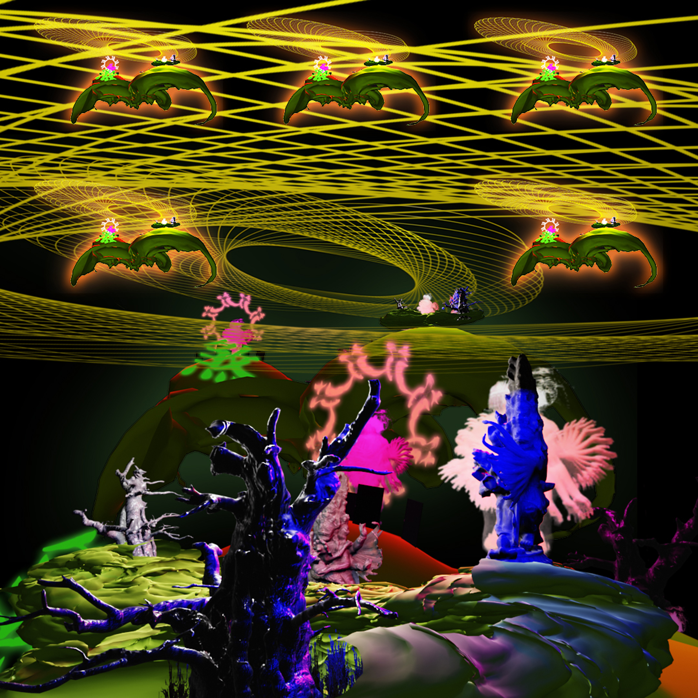
➤ 木牙MUYA: 酷⼉理论对当下时代⽽⾔，是否依然是⼀种沉溺于美好未来的乌托邦？作为艺术家，你最希望在酷⼉中提出怎样的社会探讨或反思呢？
Is queer theory still a utopia indulging in a better future? As an artist, what kind of social discussion or reflection do you most want to bring up in queer?
Junyao:沉溺也是有原因的，如果现实如此美好，我们何必沉溺。但是这种沉溺是一种集体性的沉溺，它具有表演性、抗议性、与生存意义的。作为艺术家目前我只希望做广义酷儿的教育以及对我们社群的健康引导，只有我们对我们自己有了充分了解，探讨与反思自然会发生。
Addiction is also a reason, if the reality is so good, why should we indulge. But this kind of indulgence is a kind of collective indulgence, it has the performance, the protest, and the survival significance. At present, as an artist, I only hope to educate queer people in a broad sense and to guide the health of our community. Once we have a full understanding of ourselves, discussion and reflection will naturally occur.
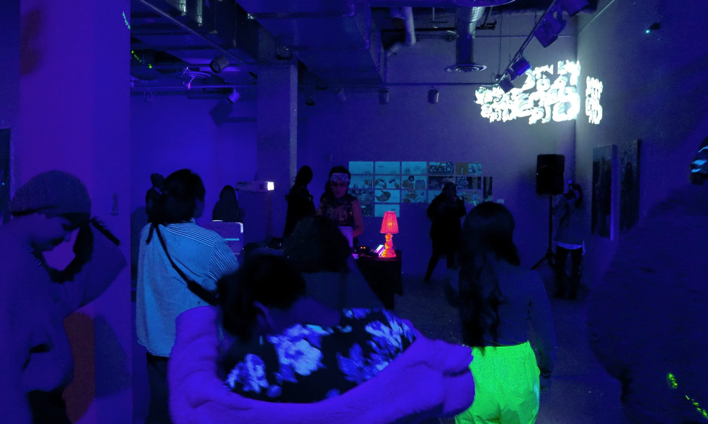
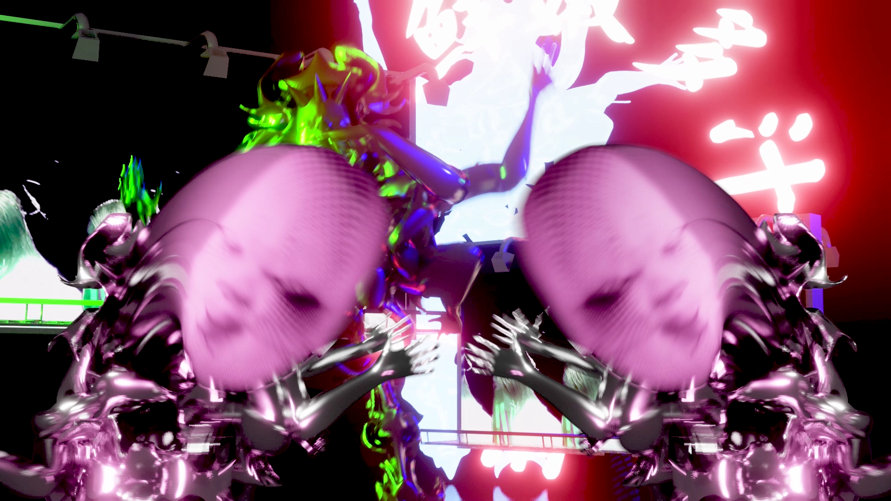
➤ 木牙MUYA: 对于最近同样关注这类主题的艺术家，钧尧⽐较欣赏的有哪⼏位？他们分别是谁来⾃哪些国家？他们哪个作品打动了你？媒介是什么？
For artists who have also paid close attention to these themes recently, who does Junyao like more? Who are they? which countries do they come from? Which of their works impressed you? What is the medium?
Junyao:我喜欢的艺术家他们几乎都没有特别关注酷儿文化，但是他们的作品都可以被认为是酷儿作品 比如：Maria Forqu 她是一名西班牙的裸体主义者（exhibitionist）以及社会挑衅者（provocator），她的作品基本上都是用实验性的裸体视频，实验拉丁音乐，以及现场表演。以色欲化的Virgen Maria的形象呈现对于性，爱，社会的探讨以及对禁锢的社交媒体的抗议；还有一个我比较喜欢的是绝对是Arca。她是一名委内瑞拉的跨性别电子音乐制作人，她的风格以贯秉持着解构，解构，再解构的理念。不论是音乐还是视觉，不仅仅在挑战着大众的视觉，同时也是对于自身的一种剖析。
Almost none of the artists I like have any particular focus on queer culture, but their work can be considered queer work. For example: Maria Forqu is a Spanish exhibitionist and Provocator, whose work at Provocator, Provocator is basically a mix of experimental nude videos, experimental Latin music, and live performances. The image of erotic Virgen Maria presents discussions on sex, love and society as well as protests against the imprisonment of social media; One of my favorites is definitely Arca. She is a Venezuelan transgender electronic music producer whose style is consistent with the concept of deconstruction and re-deconstruction. Both music and vision are not only challenging the public's vision, but also an analysis of oneself.
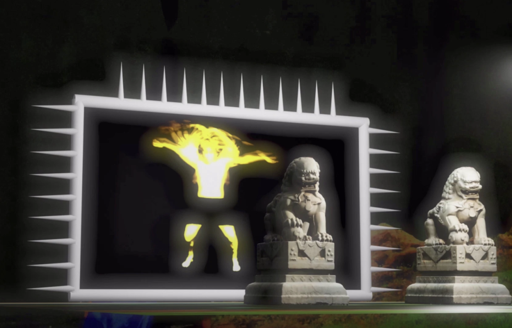
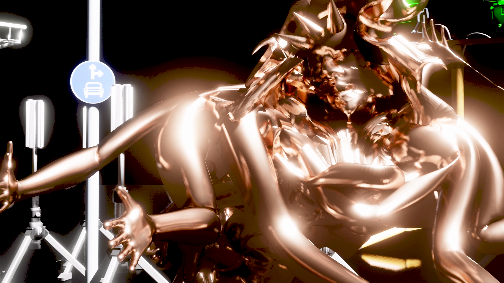
➤ 木牙MUYA: 在钧尧的作品中提及到酷儿文化在公众场合并不能得到足够的认可,作品中出现的乌托邦,自由自在,中立,接受,包括⻔口的欢迎光临等都在述说着对于酷儿将来发展的渴望。钧尧在制作作品中对于酷儿主题的未来在中国的发展方向是如何思考和理解的?可以往哪些方向展开?
In Junyao’s work, it is mentioned that Queer cannot be recognized enough in public. The utopia, freedom, neutrality, acceptance, including the welcome at the door, are all talking about the future development of Queer. Desire. How does Junyao think and understand the future development direction of Queer themes in China in your production? In which directions can we expand?
Junyao:以后俱乐部（post-club）为基底和生存空间之一是可以发展的一个方向，后俱乐部从在纽约被探索至今也只有10年的时间。未来在中国的发展方向一定可以更加的本土化，酷儿理念也可以更加的去殖民化以及广义化。
In the future, post-club is one of the bases and living Spaces, which can be developed. It has only been 10 years since the post-club was explored in New York. In the future, the direction of development in China must be more localized, and the concept of queer can also be more decolonized and generalized.
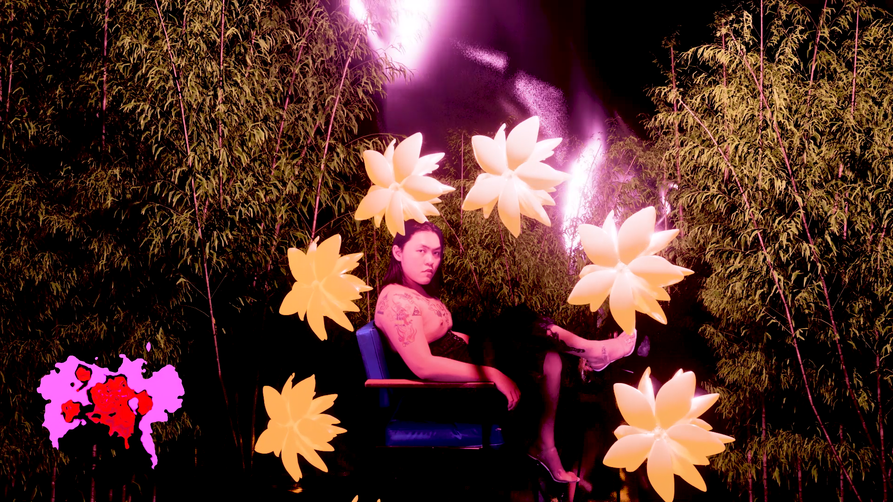
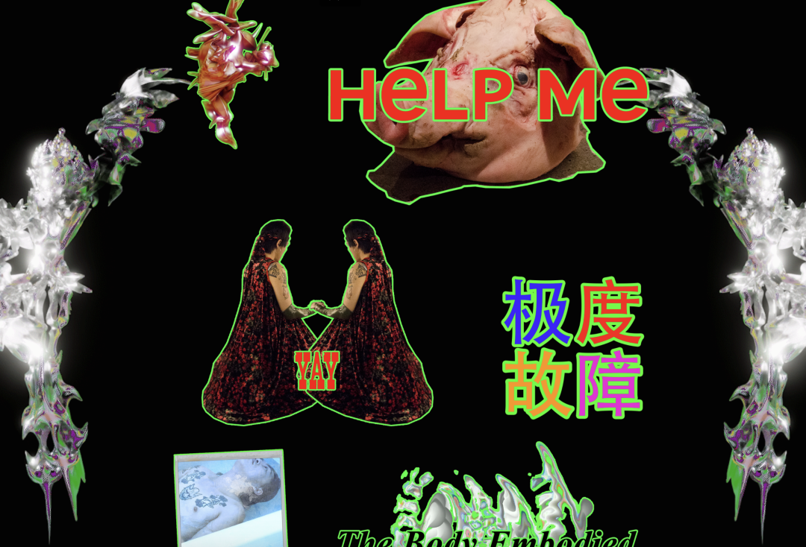
✯ Which inspire your works most ✯
“ I found my identity on the dancefloors, where allows me to embrace my queerness. ”
“我在舞池中找到了自己的身份，在那里我可以拥抱自己的酷儿身份。”
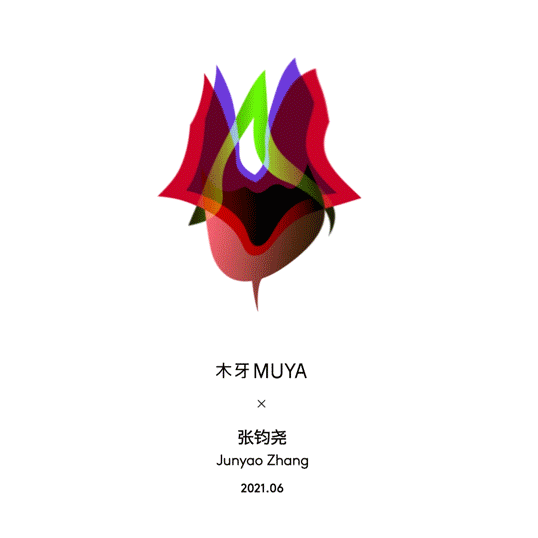
✤ Junyao Zhang网站（Junyao Zhang Website)
✤ INS(instagram): @alejandro_zhang
✤ Email（邮箱）: alejandrojunyaozhang@gmail.com
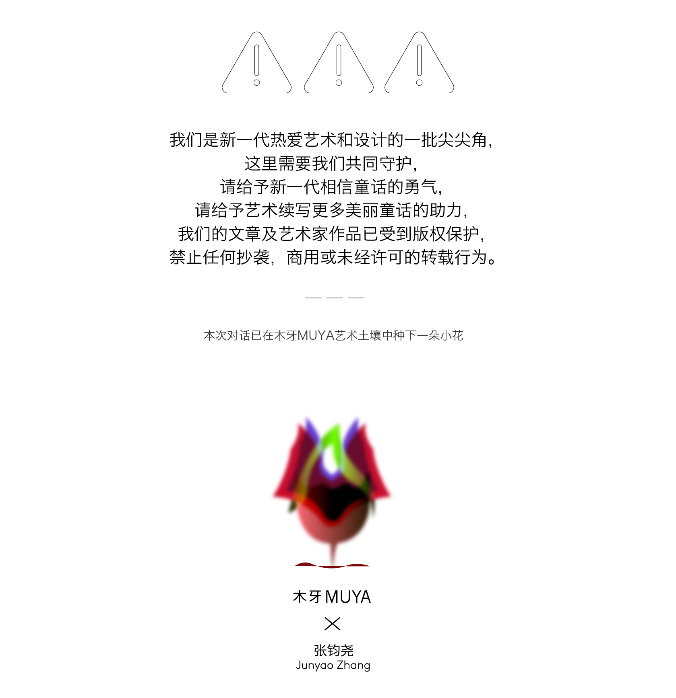
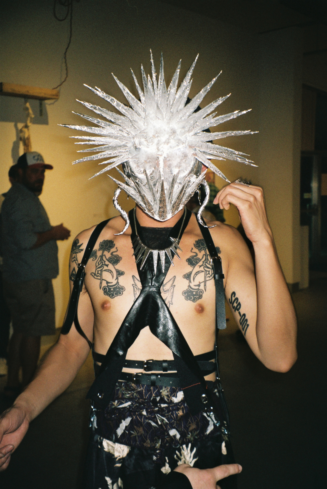
木牙微信订阅号